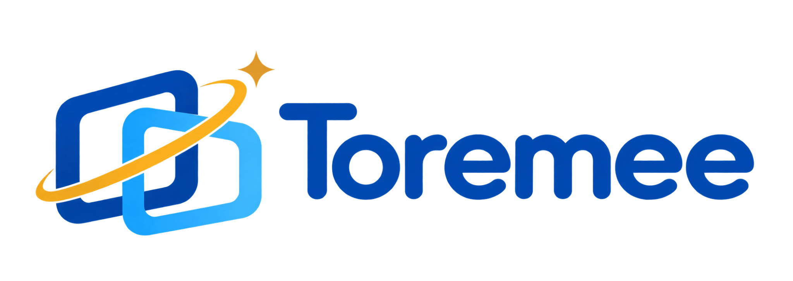

自然・観光体験
スキーリフト
10秒プレビュー

AI AUTOMATIC VIDEO SERVICE
Toremeeは、顔認証とAI編集によって、施設内で撮影された映像からお客様一人ひとりの体験動画を自動生成するサービスです。
VIDEO SAMPLES
施設やアトラクションごとの活用イメージをご覧いただけます。
10秒プレビュー
10秒プレビュー
10秒プレビュー
10秒プレビュー
10秒プレビュー
WHY TOREMEE
アトラクション中はスマートフォンを持てない。
家族全員で参加すると撮影する人がいない。
動きが速く、うまく撮れない。
Toremeeは、これまで残せなかった体験を価値ある映像に変えます。
自分では撮れないアングルや、体験に夢中な自然な表情を、臨場感のある思い出として届けます。
撮影した動画を新しい商品として販売。アトラクションを変えずに、来場者一人あたりの売上向上につなげます。
受け取った動画はその場でSNSへ。来場者自身のリアルな体験が、施設の魅力を伝えるコンテンツとして広がります。
PROVEN TECHNOLOGY
Toremeeは、MirameeがHuipaiと業務提携し、日本市場向けに企画・展開するAI自動動画生成サービスです。
Huipaiの技術と海外で培われた運用ノウハウをもとに、Mirameeが日本国内の施設に合わせた企画・導入・運用を担当します。
スピード感のあるアトラクションから、雄大な自然を楽しむ体験まで、施設ごとに最適な撮影ポイントと編集方法を設計します。
CORE TECHNOLOGY
複数人が映る場面でも本人を高精度に特定。他のお客様をスタッフが一件ずつ取り除く作業は原則不要です。
複数人で体験した場合も、異なる場面を選び分け、内容が重ならない動画を生成できます。
撮影、抽出、編集、合成までをクラウドで自動化。体験の余韻が残るうちに受け取れます。
海外の多様な施設で磨かれた認証技術と運用ノウハウで、導入後も安定した撮影を支えます。
複数の固定カメラや360度カメラなど、施設と体験に合った撮影構成を設計できます。
表情・姿勢・動作・構図を分析し、30種類以上の動作から、その人らしいハイライトを選びます。
※本人認証精度・生成時間は技術提供元による実績値です。撮影環境、照明、通信状況、設置条件等により異なる場合があります。
CREATIVE CONTROL
動画をただつなぐのではなく、施設のブランドや季節、イベントに合わせて表現を設計。
テンプレートやBGMはイベントごとに無料で、すぐ変更できます。
イベントごとに無料で、すぐに変更可能
世界観に合わせた映像表現にカスタマイズ
写真も盛り込み、物語性のある一本に
ロゴや装飾で施設独自のデザインへ
SNS向け短尺から思い出用まで柔軟に
見どころを選び、テンポよく一本の動画に
HOW IT WORKS
QRコードから利用を開始。スタッフによる案内を最小限に。
複数の撮影ポイントで、遊びに夢中な自然な姿を記録。
本人の場面を抽出し、テンプレートとBGMで動画を自動編集。
オンライン決済後、その場で保存。SNSへスムーズに投稿。
OPERATION DEMO
QRコードの読み取りから本人認証、プラン選択、決済、保存までを動画でご覧いただけます。スタッフを介さず、お客様自身で操作が完結します。
※掲載動画は運用イメージです。画面デザインや案内文、受け取り方法は、施設のご希望に合わせて設定できます。
EXPERIENCE DESIGN
撮影サービスは、来場者に気づいてもらい、迷わず体験してもらうことが大切です。施設の動線や客層に合わせ、利用を促す現地施策も一緒に設計します。
カメラの位置やおすすめのポーズを、ピクトグラムや案内パネルで直感的に伝えます。
無料のお試しシーンや周遊企画など、動画を体験するきっかけづくりをご提案します。
対象エリアや期間を絞り、来場者の反応と運用負担を確認しながら本格導入を検討できます。
REVENUE SHARE PLAN
撮影機器の設置、システム利用、日常運用・保守にかかる固定費をMirameeが負担。施設側は初期投資や月額固定費なしで導入でき、動画販売の売上をあらかじめ定めた割合で分配します。
※施設の規模、設置環境、想定利用者数などにより適用条件が異なります。詳細はお問い合わせください。FOR FACILITIES
初期費用や現場の運用負担を抑えた実証実験からご相談いただけます。施設の規模、動線、撮影ポイントに合わせて導入方法をご提案します。